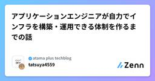

atama plus techblogのフィード
https://zenn.dev/p/atamaplus
EdTechスタートアップatama plusのメンバーが書いた技術記事を投稿していきます。
フィード

アプリケーションエンジニアが自力でインフラを構築・運用できる体制を作るまでの話 2
2
atama plus techblogのフィード
こんにちは、atama plusでSREをしている加藤です。弊社では直近のプロダクト開発において、AWS CDKとドキュメントをプラットフォームとして、アプリケーションエンジニアが自らインフラを構築・運用する体制を取っています。「You Build It, You Run It」を体現するこの仕組みをどのように生み出し、浸透させたのか。本記事ではその経緯をご紹介します。 体制の説明「AWS CDKとドキュメントをプラットフォームとして、アプリケーションエンジニアが自らインフラを構築・運用する体制」と言ってもイメージが湧きにくいと思うので最初に体制の概要を示します。この体制のこ...
4日前
Claude Codeのfeature-devプラグインが「動くは動くんだけど...」を解決してくれた話 3
atama plus techblogのフィード
こんにちは、yubonです。 はじめにClaude Codeを使っていてずっとモヤモヤしていたことが、feature-devプラグインを使い始めてから少しずつ解消されてきたので、紹介してみようと思います。きっかけはこちらの記事で紹介されていたのを見たことでした。https://zenn.dev/ubie_dev/articles/claude-code-tips-findy-2026#手戻りを減らしたい 想定読者Claude Codeを日常的に使っている方CLAUDE.mdなどでコンテキスト情報をある程度整備しているが、それでも思い通りのアウトプットが出ないと感じてい...
5日前

複数のコーディングエージェントでSkillsを共有する（Claude Code / Codex対応）
atama plus techblogのフィード
複数のコーディングエージェントを使っていて Skills の共通管理に困っていませんか？私たちのチームもまさにその課題に直面していました。Claude Code を使うメンバーもいれば、OpenAI Codex を使うメンバーもいる環境で、Skills の導入に踏み切れていませんでした。この記事では、シンボリックリンクを活用して複数のコーディングエージェントで同一の Skills を参照する方法を紹介します。!この記事は 2026年1月9日時点の情報です。各コーディングエージェントの仕様は頻繁に更新されるため、今後の仕様変更でこの記事で紹介する方法が不要になる可能性があります。最...
2ヶ月前
今からあなたを褒める（という体験をプロダクトで形にした話）
atama plus techblogのフィード
この記事を読むあなたへ数あるAdvent Calendar記事の中、見つけてくれてありがとうございます！yuki_nomuraと申します。この記事は atama plus Advent Calendar 2025 の最終日の記事です。メリークリスマス！この記事を開いたあなたは、今日1つの行動を終えました。忙しい毎日の中で、時間を使って記事を読みにきてくれたという事実だけで、すでに1つの成果になっています。ーー急にどうした? と思われるかもしれませんが、私たちのプロダクト開発の現場では「褒める」という行為を大切にしています。良い結果や挑戦に対して素晴らしかった点を言語化し...
3ヶ月前
バグの優先度判断基準/フローの適正化をスコアリングで行った話
atama plus techblogのフィード
はじめにメリークリスマスイブ！ atama plusでQAエンジニアをやっていますpiyoです 。atama plus Advent Calendar 2025の12月24日の記事になります 。atama plusではバグをJIRAで管理し、毎朝QA主導で新規バグのトリアージ（バグの内容確認、優先度判断、対応チームのアサイン決めなど）を実施しています 。今回は、スコアリングによる優先度判断基準とフローを整備した取り組みについて紹介します。「バグのトリアージで、バグの優先度判断に迷っている」「事業状況に応じた対応判断に迷いが生じやすい状況に陥っている」もしそんな悩みを感じている...
3ヶ月前
型に対してもsatisfiesしたい！ TypeScriptで型の構造を強制する方法
atama plus techblogのフィード
!この記事はatama plus Advent Calendar 2025の 23 日目の記事です。 はじめにTypeScript の discriminated union（判別可能なユニオン型）は便利です。共通の type プロパティなどでユニオンのメンバーを判別できるようにしておくと、型の絞り込み（narrowing）が効いて、条件分岐の中で特定の型として扱えます。discriminated unionを使って複数の型を定義するとき、各ユニオンメンバーが必ず同じプロパティを持つように、型の構造を強制したいと思ったことはありませんか？例えば、通知システムを考えてみます...
3ヶ月前
実務で使うJujutsu：Git経験者のための実践ガイド
atama plus techblogのフィード
atama plusでエンジニアをしているkiraです。こちらは atama plus Advent Calendar 2025の22日目の記事です。https://zenn.dev/atamaplus/articles/8bb88e007fd0c6 はじめにみなさん、Gitを使っている中で難しいなと感じたことはないでしょうか？私はrebaseをしたりcherry-pickをしたりするときに難しいと感じることが多く、その度にどうやるんだっけ？と調べてから使っていました。rebaseの途中でコンフリクトが生じて迷子になりgit reset --hardしたこともしばしばありまし...
3ヶ月前
指標ドリブンで E2E テストを改善！実行時間半減・成功率 99%を達成するまで
atama plus techblogのフィード
指標ドリブンで E2E テストを改善！実行時間半減・成功率 99%を達成するまで はじめにこんにちは！atama plusでQAエンジニアをやっている池上です。この記事はatama plus Advent Calendar 2025の12月19日の記事です！自動テストを導入したものの、「実行に時間がかかる」「テストがよく失敗する」といった課題に直面している方もいらっしゃるのではないでしょうか。本記事では、E2Eテストの改善活動において「評価指標の設定」と「データに基づく改善サイクル」がいかに重要かを、実際の改善事例を通じてご紹介します。テスト自動化を進めているQAエンジ...
3ヶ月前
【運用効率化】Claude Code GitHub ActionsのカスタムプロンプトをReusable Workflowで一元管理する仕組
atama plus techblogのフィード
こんにちは、atama plusでエンジニアをしているこっきーです。この記事はatama plus Advent Calendar 2025の記事です。 はじめにClaude Code GitHub Actionsにより、コードレビューやドキュメント生成を自動化できます。しかし、プロンプトやアクション設定を各リポジトリごとに持つと、更新や管理が煩雑になりがちです。そこで本記事では、カスタムプロンプトや設定をReusable Workflowで一元管理する方法 を紹介します。組織内での運用標準化にも有効な手法です。 Claude Code GitHub Actionsとは...
3ヶ月前
奮闘したデータベース監査ログの意義を法令をもとに整理する
atama plus techblogのフィード
こんにちは、atama plus SRE チームの小路です。本記事は、2025年12月16日の「どろんこSRE話〜綺麗じゃないSREの苦労話〜」で登壇した際の内容と重複する部分があります。冒頭は登壇時と同じ内容の学びのまとめ（と問題なく公開されればスライドのリンク）で、10分では話せなかった細かい構成、知識についてをここからまとめています。 DB監査ログについて、奮闘して得た学び会社のフェーズによるものの、DB監査ログは「早く」検討しておくべきということです。以下の3点を踏まえて推しています。会社・事業のフェーズに見合った監査ログ取得範囲の検討DB監査ログ取得の検討と開...
3ヶ月前
[AWS] CDKでVPCを後からマルチAZにしたらCIDRコンフリクトでハマった話
atama plus techblogのフィード
こんにちは！ atamaplusでエンジニアをしているzussyです。この記事では、AWS CDKで後からマルチAZに変更するときに起こった問題とその解決策についてご紹介します。同じ課題に遭遇した方の参考になれば幸いです。 経緯コスト削減のため、最初は1AZでVPCを構築していました。「後でマルチAZに変更すればいいや」と軽く考えていたのですが、実際に変更しようとしたらCIDRコンフリクトが発生してしまいました。CIDR設計は事前にSREチームに相談して、3AZまで対応できるように設計してもらっていたのに、なぜコンフリクトが起きたのか...。調べてみると、CDKのVPCコンス...
3ヶ月前
社内勉強会の継続には「振り返り」が効く気がする
atama plus techblogのフィード
こんにちは、su（@yugawala）です。atama plusという教育xAIの会社でいい感じのプロダクトを作りたいと日々妄想に取り組んでいます。持ち回り系の期限のない社内勉強会を継続させるのは難しいなと思っています。私自身、過去にいくつかの勉強会が自然消滅する場面に遭遇してきました。そんな中で、今年の5月から始めた勉強会が、今のところ半年以上継続できています。「なぜ今回は続いているんだろう？」と考えてみたときに、 「定期的な振り返り」 が意外と効いているんじゃないか、と思ったのでシェアしてみます。もちろん、これだけで全て上手くいくわけではありませんが、ひとつの事例として参...
3ヶ月前
CDK x CloudFront FunctionsでKeyValueStoreのデプロイが失敗した話
atama plus techblogのフィード
!この記事は atama plus アドベントカレンダー 2025 12月12日の記事です。 はじめにこんにちは、atama plus株式会社 でWebエンジニアをしているbuko106です。 弊社ではSREだけでなくWEBアプリケーションエンジニアもインフラ関係のコードを書ける基盤が整えられており、CDKを用いたインフラ構築を行う機会が増えてきています。今回は、CDKでCloudFront FunctionsのKeyValueStoreをデプロイする際に発生した問題とその解決方法について紹介します。 TL;DRCDKでCloudFront FunctionsのKeyV...
3ヶ月前
個人の「行動」を組織の「学び」に変える。インプロセスQAチームの共有会設計
atama plus techblogのフィード
こんにちは！ atama plus で QA エンジニアをしている atsushi です。この記事は atama plus Advent Calendar 2025 の12月11日の記事です！弊社のQA組織は、大きく 「横断QA」 （自動テストなどの横断的なテーマを扱うQAの集合）と 「プロダクトQA」 （インプロセスQAの集合）に分かれており、私は後者の取りまとめを担当しています。QAメンバーが各開発チームに分散する「インプロセスQA」は、開発速度と品質を両立しやすい反面、「QA間の連携」や「組織的な価値の最大化」が難しいという課題があります。本記事では、この課題に対し、「個人...
3ヶ月前
モノレポのLefthook設定、どうしてる？ 独立性・速度・メンテコストで選ぶ3つの構成パターン
atama plus techblogのフィード
こんにちは、yubonです。atama plus Advent Calendar 2025 の10日目になります。本記事では、モノレポのGitフック運用における「独立性」「速度」「メンテコスト」の課題に焦点を当て、Lefthookを用いた3つの構成パターンと実践事例を紹介します。Lefthookの基本的な導入記事は多く見かけますが、モノレポ環境でどのように構成するのがよいかについては、まだ情報が多くないと感じたので、何か参考になれば幸いです。 想定読者モノレポでのGitフック運用において、設定の保守コストや実行速度に悩んでいる方プロジェクト規模が大きくなり、既存のHusk...
3ヶ月前
AWS CDKのクロススタック参照と仲良くなりたい
atama plus techblogのフィード
こんにちは！ atama plusのnomu3です。現在、弊社ではインフラのセルフサービス化を推進しており、私たちSREチームでは開発者がCDKを利用してインフラ構築するにあたってのガイドライン整備や独自ライブラリによるサポートなどを行なっています。そんな中で先日、新たにスタック間でリソース参照する際のノウハウについて整理して社内向けにガイドラインを作成したため、この記事ではそのポイントやクロススタック参照における考慮事項などを紹介します。 背景(AWS CDKの技術的な前提のお話になるため、知っている人は飛ばしてください)AWS CDK(CloudFormation)のスタ...
3ヶ月前
Branded Type × Zod で TS4023 にハマった話
atama plus techblogのフィード
本記事では、Branded Type と Zod を組み合わせたときに TS4023 が発生した原因と、Brand という中間型を導入して解決した方法を紹介します。 みなさん Branded Type 使ってますか？Branded Type 便利ですよね。弊社のプロダクトでは TypeScript を用いた関数型ドメインモデリングを採用しており、Branded Type を多用しています。よくある Branded Type の定義例はこんな感じです。declare const _brand: unique symbol;type Branded<T, B extend...
3ヶ月前
atama plusと生成AI（2025年版）
atama plus techblogのフィード
こちらはatama plus Advent Calendar 2025 5日目の記事です。こんにちは！atama plusのigawyです。みなさんはどの生成AIツールを使っていますか？2025年も生成AIツールが次々出て、様々なアップデートがありましたね。至るところで生成AIのTIPSや活用に関する記事を見かけます。では、それらのツールはどうやって使い始めましたか？組織としてツールを導入する場合、用途やコスト、セキュリティなど様々なことを考えた上で導入有無を判断したいところです。ただ、迅速にその状態に持っていくためにはリソースが必要です。組織によっては情シスの方がその役割を...
4ヶ月前
Cloneに90分かかる巨大リポジトリの軽量化を検討した話
atama plus techblogのフィード
こんにちは、atama plusでエンジニアをしているsugiです。先日、32GBにまで肥大化した巨大Gitリポジトリの軽量化を検討する機会がありました。検討の結果、「技術的には1GBまで削減できるが、運用上の問題を考慮して軽量化は行わない」という判断に至りました。この記事では、なぜそのような判断に至ったのか、その経緯を共有します！ 現状：Cloneに90分かかるリポジトリ私が所属するチームでは、歴史的経緯により肥大化した巨大なリポジトリを抱えていました。Git履歴（.gitフォルダ）： 約32GBLFS実体込みのサイズ： 200GB超このリポジトリを新規参...
4ヶ月前
FastMCP + FastAPIで複数認証方式を実装する - OAuthとJWTを両立したMCPサーバの実践例
atama plus techblogのフィード
はじめにatama plusにてデータエンジニアをしているTackungです。この記事はatama plus Advent Calendar 2025の12月3日の記事です！我々のチームでは現在、AI-readyなデータ基盤構築の一環として、社内データをAPI/MCPで利用可能にするサーバを開発しています。この記事では、FastMCP + FastAPIを使った複数の認証方式のインタフェースを1つのサーバ上で実現する実装プラクティスを紹介します。特に、次の2方式を同一サーバで同時にサポートする方法について、実装時の工夫や実装例を紹介します。Google Workspace...
4ヶ月前